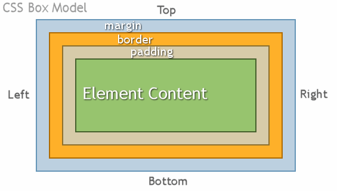

WEB2-CSS
1강. CSS
HTML이 처음에 등장했을 때는 HTML 하나밖에 없었음. HTML을 이용하면 전자문서를 만들수 있었음. 컴퓨터를 통해서 정보를 표현할수있게 되었음. 이 정보를 인터넷을 통해서 전세계 누구나 볼 수 있게 할 수 있다는 것은 혁명적인 사건.곧 시간이 지나면서 여러가지 불평들이 터져나옴.
우리 수업의 관심사는 웹페이지를 좀 더 아름다우면서 보기좋은 형태로 만드는 방법에 대한 불만족들.
2강. CSS가 등장하기 전의 상황
문서의 글꼴 변경, 문자의 크기와 색상 변경, 배경이미지를 넣고 싶어요 등등 웹페이지를 아름답게 꾸미고 싶다는 요구들이 생겨남
꾸미는 방법에는 쉽지만 한계가 있는 기술이 있고 어렵지만 한계가 없는 방법이 있음. 처음에는 쉽지만 한계가 있는 기술이 도입됐는데 그것이 기본적인 태그에 꾸미는 문자를 만들어낸것 - font 태그
그리고 이러한 사족이 붙으면 웹페이지가 정보로서의 가치가 현격히 떨어지는 문제가 발생
3강. CSS의 등장
웹페이지를 아름답게 디자인 하는 길 - CSS CSS는 새로운 문법이고 기본적으로 웹페이지는 HTML을 인식하기 때문에 html 이 인식할수 있도록 style태그를 붙여 주고 그 안에 코드를 짜넣는게 CSS
CSS사용이유
1.HTML이 정보에 전념하게 하기 위해서 HTML로부터 디자인에 관한
기능을 뺏어온 것.
2. CSS를 통해서 웹페이지를 디자인하는 것이 HTML로 디자인
하는 것보다 훨씬 더 효율적임
4강. CSS의 기본문법
stlye말고 속성을 이용하여 꾸미는 방법도 있음 a{} : 선택자라고 함, 관련 모든 태그에 대한 명령 {}안에 들어가는게 선언(declaration). 즉 1. style tag를 사용(head 부분에 선언) 2. style 속성을 사용(직접 안에 넣어서 쓰는것)
5강. 혁명적 변화
이론적으로 CSS 정리해보자.이제는 선택자와 property의 종류에 대해서 배울것이다

6강. CSS의 속성을 스스로 알아내기
관련 검색어 추천 : css text size property
7강. CSS의 선택자의 기본
선택자의 레벨 : tag< class < id, class는 .으로 id는 #으로 표시 태그안에 class="", id="", 이렇게 표시하면 됨, 우선순위가 같다면 가장 마지막에 있는 것에 명령을 받는다. id선택자는 한번만 써야한다. 좀 더 구체적인 것이 포괄적인 것보다 우선순위를 높도록 설계를 했기 때문이다. id선택자와 tag선택자 사이에 있는게 class선택자이다.
검색은 CSS selector
8강. 박스모델
박스모델도 선택자나 속성처럼 매우매우 중요하다.
9강. 박스모델 적용
10강. 그리드 소개
디자인이라는 목적에 의해서 어떤 의미도 없는 태그를 써서 묶어야 할 때가 있음 무색무취의 태그가 바로 div, div는 block level이고 span은 inline level caniuse.com - 이 기술이 현재 얼마나 사용되고 있는지 알려주는 사이트
11강. 그리드 적용
12강. 미디어 쿼리 소개
화면의 크기에 따라서 웹페이지의 각 요소들이 반응해서 최적화 된 모양으로 바뀌게 하는 것을 반응형 웹 또는 반응형 디자인이라고 한다. resposive web 수많은 형태의 화면에서 웹이 동작해야 한다 - 상당히 어려운 걸림돌이다. 다양한 환경에서 적용할 수 있는 반응형 디자인을 개발했다. 반응형 디자인의 핵심적인 개념이 미디어 쿼리이다.
13강. 미디어 쿼리 적용
14강. CSS코드의 재사용
style을 그대로 가져다 다른곳에 붙여놓으면 내가 생각한 디자인이 나오지 않는다. 만약 1억개의 웹페이지가 있다면 CSS하나하나 바꾸기 불가능할것. style.css 파일을 만들어서 웹에서 다운받게끔 한다. 그게 link tag다
캐싱 - 한번 style.css를 다운받으면 웹브라우저는 우리의 컴퓨터에 저장해놨다가 또 필요하면 저장된 결과를 가져와서 네트워크 속도를 유지하고 돈을 절약할 수 있음
15강. 수업을 마치며
선택자와 속성이 가장 중요하다. 더 다양하게 알 수록 다양하게 디자인가능하다.